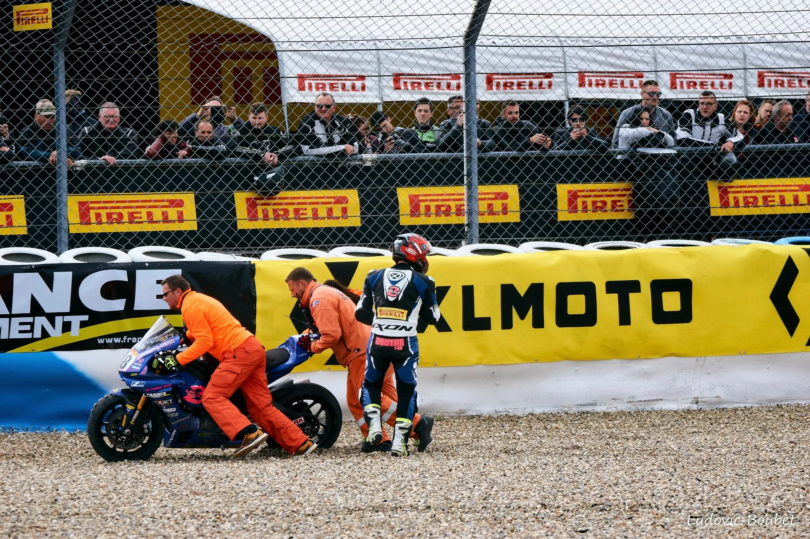
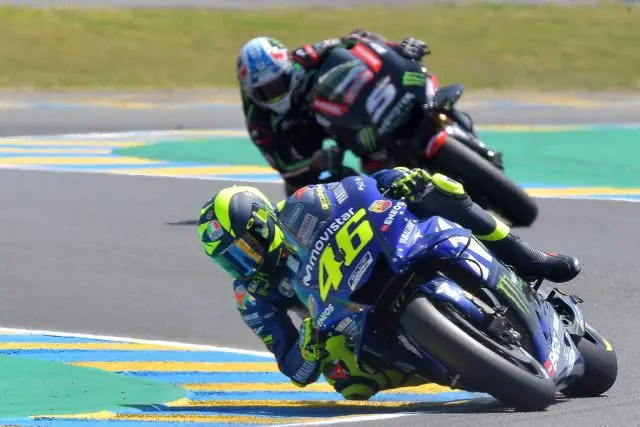

Que vous souhaitiez vous initiez à la moto de piste, vous entrainez pour vos tournois FFM à venir : RPJ Motorsport en partenariat avec la FFM vous propose des sessions d’entrainement. Dans tous les circuits de France, nous proposons de vous accompagner avec nos nombreux coachs qualifiés qui vous permettrons de vous sensibiliser sur la sécurité que vous soyez pilote ou spectateur.



LA SÉCURITÉ, NOTRE PRIORITÉ
En tant qu'organisateur de session de moto, nous nous devons de sensibiliser les jeunes et les plus anciens motards à la sécurité que ce soit sur le circuit ou sur la route. La moto reste tout de même une pratique dangereuse. C'est pour cela que depuis quelques années, nous avons décidé de mettre en œuvre un service de sensibilisation qui intervient aussi bien dans les circuits que dans les auto-écoles. La sécurité de nos adhérents est une priorité. Sur les circuits, notre staff composé de personnel qualifié vous accompagneras en cas de problème.

NOS AVANTAGES
Pour vous nous vous proposons un espace client personnalisé. Celui-ci nous permettra de mieux vous connaitre et de vous proposer les journées de piste qui pourrait le plus vous correspondre. Nous vous proposerons après une inscription des promotions et des avantages sur nos journées de roulage et nous permettra de vous proposer un environnement entièrement personnalisé pour une meilleure expérience.